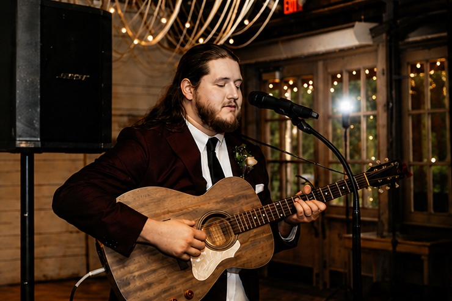
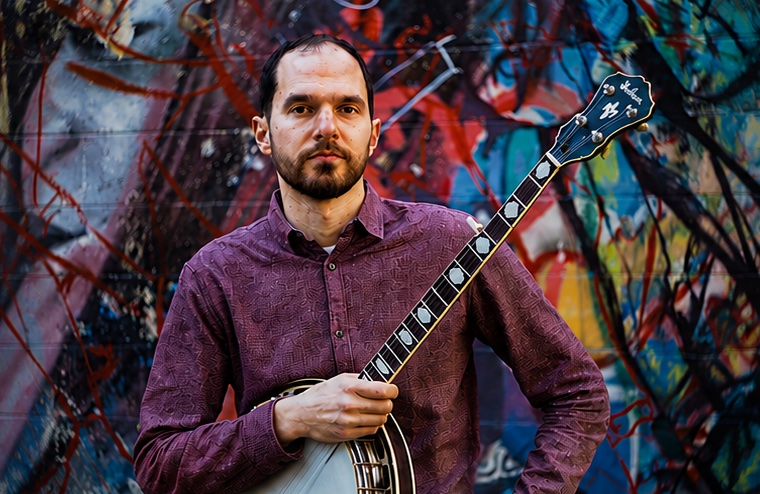
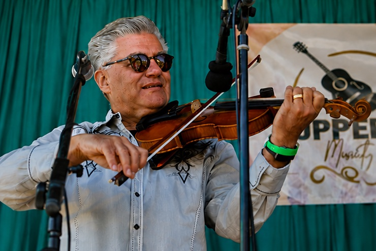
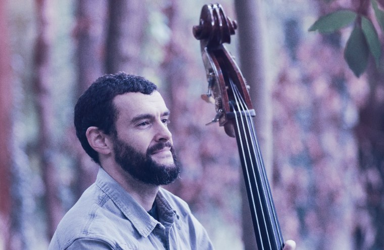

Phillygrass is a Philadelphia bluegrass band built on hard-driving rhythm, precision picking,
and tight three-part harmony, playing traditional and contemporary bluegrass, burning
instrumentals, and a few jazz-flavored surprises.

Pat Farrell
Guitar
Pat is a Philadelphia-based Bluegrass musician and bandleader dedicated to advancing the tradition through high level musicianship and modern energy. With formal training in Jazz Performance from Temple University, Farrell brings an improvisational approach, rhythmic precision, and deep ensemble awareness to Bluegrass music, grounding his work in tradition while allowing room for exploration. He is currently focusing his efforts on performing and leading his band, Phillygrass, a project rooted in Bluegrass tradition and shaped by the intensity of Philadelphia’s music scene. The band’s sound emphasizes drive, innovation, and dynamic live performance, reflecting Pat's commitment to Bluegrass as a living, evolving form. Pat's broader musical background include work in Post-Rock and underground Punk bands which adds edge to his Bluegrass playing without distracting from its core. He has also performed as part of a house band at Chris’ Jazz Café from 2023 to 2024 and for their last year performing as the bassist/occasional guitarist for the Philadelphia based band The Cheddar Boys, which he performed alongside at the Windgap Bluegrass Festival and Philadelphia Music Festival at Milkboy. Farrell is also a standby member for the Philadelphia based Bluegrass and Oldtime group, Noggin Hill.

Ben Krakauer
Banjo
Ben is a banjo player and composer rooted in bluegrass, jazz, and new acoustic music. He has toured with David Grisman, was a founding member of Old School Freight Train, and has recorded for Acoustic Disc, Adhyâropa Records, CMH Records, and the Fiddle Masters series. His solo albums, Heart Lake (2019) and Hidden Animals (2023) feature original compositions for banjo, fiddle, bass, drums, and cello. Ben is also an ethnomusicologist and Assistant Professor of Music and Chair of the music department at Warren Wilson College.

Jeff Westerinen
Fiddle & Mandolin
Jeff has played Bluegrass and Old Time music professionally for over 40 years. A native Marylander with an itinerant history, Jeff has played fiddle, mandolin and bass in regional bands from New York, Florida, South Carolina and Washington State before moving back to Maryland in September of 2014. He is a veteran of the five-time New York State champion Yankee Rebels and the year 2000 International Bluegrass Music (Pizza Hut) Champion Ohop Valley Boys. A true multi-instrumentalist, Jeff is also known to play a fiddle tune on a mandolin, flatpick a guitar or pick up a banjo to play a breakdown or two.

Chris Coyle
Upright Bass
Chris has performed with a wide array of other dynamic ensembles: Son Step, NotSoSilentCinema, Fish Harmonics, Noggin Hill, Oscuro Quintet, Conjunto Philadelphia, West Philadelphia Orchestra, and Rhinoceri Trio, among others. As a composer, Chris blends chamber writing with electro-acoustic sounds, uses harmony and form to explore musical ambiguity (choose your own damn adventure), and utilizes an original approach to improvisation. He has been recognized by the American Composers Forum, the McKnight Foundation, and the Pennsylvania Council on the Arts. Chris has performed and done workshops all over the Midwest and Northeast US, in Canada, Germany, and South Korea.